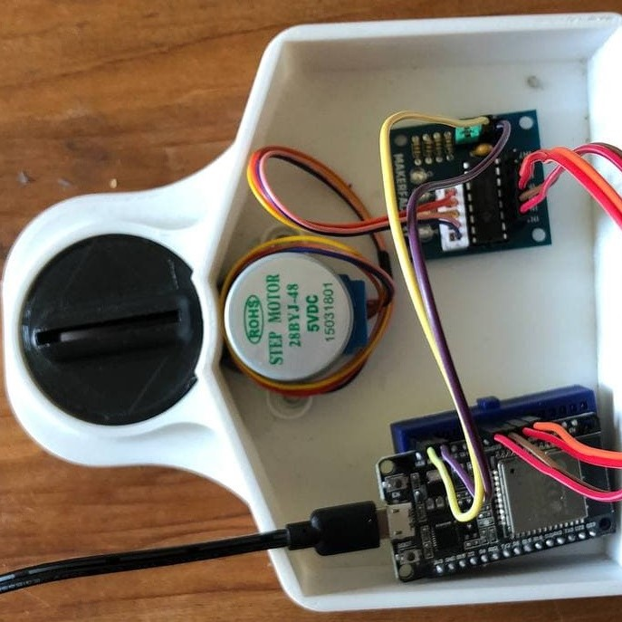
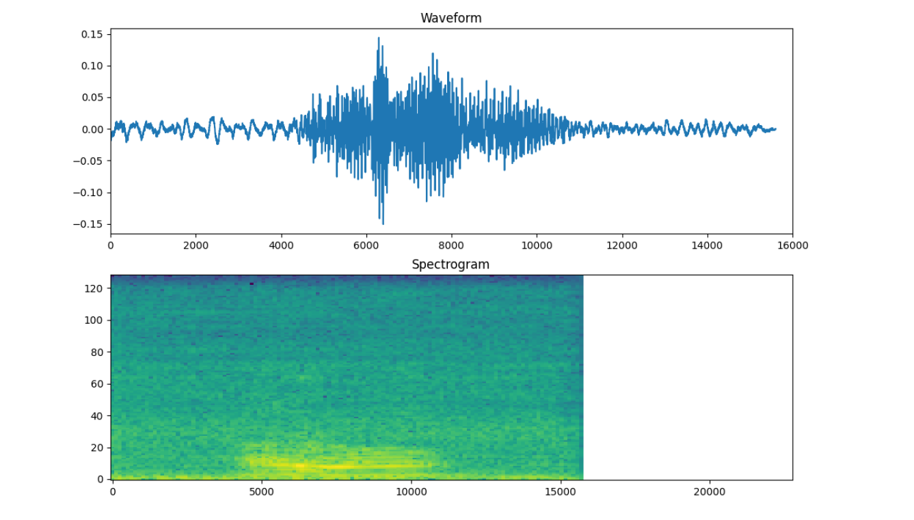

Smart & Secure Gate Opener
A major project during my fourth semester had the internet of Things, a new Web of devices, as a topic. My teammate and I designed a Lock system which could, in theory, remotely control your lock via an app and via voice control, eliminating the possibility of losing your keys.
As it is always the case, when starting from scratch with nothing more than an idea, the only thing certain about the plan you start off with is that it will be subject to change. While the prototype stayed rather impractical until the end, we learned a lot about Machine Learning, microcontrollers, and more. A final presentation video can be seen here.